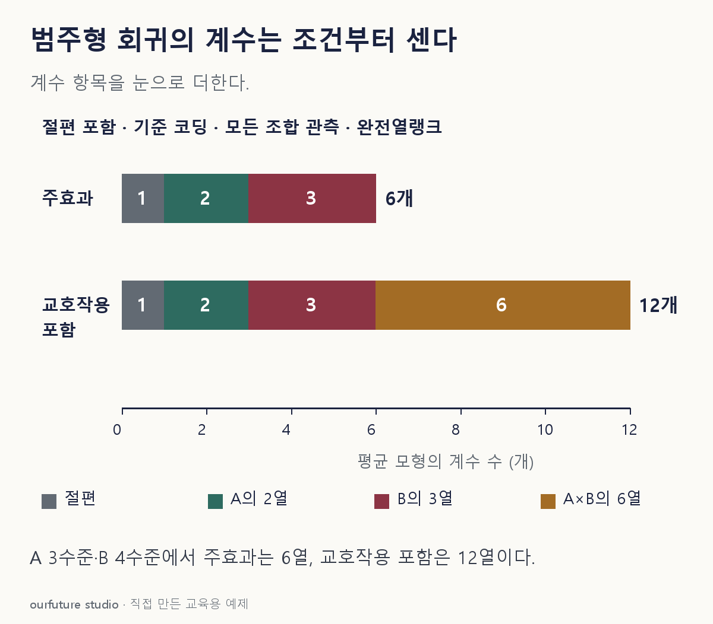

핵심 이론
범주 A가 세 수준, B가 네 수준이라는 말만으로 회귀계수 수가 정해지지는 않는다. 여기서는 절편을 포함하고 각 범주를 기준 수준과 비교하는 지시변수 코딩을 쓴다. 교호작용 없는 주효과 모형이면 A에 두 열, B에 세 열이 필요하다. 절편까지 총 여섯 계수다. 계수 수에는 오차분산을 넣지 않는다.
A의 기준 수준에서는 A의 두 지시변수가 모두 0이다. 그 표본을 버린다는 뜻이 아니다. 절편은 A와 B가 모두 기준 수준인 조합의 평균을 나타낸다. A의 계수는 B가 같은 상태에서 기준 A와 다른 수준의 차이다. 가산 모형에서는 그 차이가 B 수준에 따라 달라지지 않는다고 놓는다. 지시변수는 해당 수준이면 1, 아니면 0인 열이다. 예를 들어 A=확장·B=서인 행은 [절편,A확장,A전문,B서,B남,B북]=[1,1,0,1,0,0]이 된다. 설계행렬은 이런 행을 표본마다 쌓은 표이고, 완전열랭크는 한 열이 다른 열의 조합으로 완전히 중복되지 않는 조건이다.
열 수만큼 계수를 독립 추정할 수 있다고 말하려면 설계행렬의 완전열랭크가 필요하다. 모든 조합의 관측은 이 예제에서 랭크를 확보하는 충분조건이며 가산 모형의 일반적 필요조건은 아니다. 빈 조합 하나만으로 추정 불가라고 단정하지 않는다. 완전한 열종속 등으로 열랭크가 부족한지를 확인한다. A×B 교호작용은 (3−1)(4−1)=6개 열을 더하므로 가산 모형과 구분한다.
작은 예제로 확인하기
자체 예제: A={기본,확장,전문}, B={동,서,남,북}. 모든 조합이 관측되고 주효과만 사용한다.
| 구성 | 열 수 |
|---|---|
| 절편 | 1 |
| A 기준 비교 | 2 |
| B 기준 비교 | 3 |
1+2+3=6이다. 반응변수 열과 잔차 열은 설명변수 설계행렬의 계수로 세지 않는다.
그림으로 확인하기

직접 고르기
A 3수준·B 4수준. 절편 포함, 기준 코딩, 주효과만, 설계행렬 완전열랭크.
추정하는 평균 모형의 계수 수는?
- 1. 5개
- 2. 6개
- 3. 7개
- 4. 12개
정답과 오답의 이유 확인하기
정답 2번 — 6개
절편 1개와 A의 2개, B의 3개를 더하면 6개다. 문제는 교호작용을 제외했다.
- 1번: 5는 지시변수 계수만 센 것으로 절편이 빠졌다.
- 3번: 7은 수준 3+4를 그대로 더한 수로 지정된 기준 코딩과 다르다.
- 4번: 12는 두 범주의 모든 조합을 별도 평균으로 표현할 때의 자유로운 평균 수다.
조건 하나 바꾸어 풀기
A의 3수준과 B의 4수준의 12조합이 모두 관측되고 교호작용까지의 설계행렬도 완전열랭크다. 절편·주효과·A×B 교호작용을 포함하면 평균 모형의 계수는 몇 개인가?
풀이: 12개.
주효과 6개에 (3−1)(4−1)=6개 교호작용 계수를 더한다. 가산 모형과 별도로 변형 발문에서 모든 조합 관측과 교호작용 설계행렬의 완전열랭크를 지정했다.
다시 떠올릴 단서
절편을 적고, 수준마다 하나씩 뺀다.
근거와 적용 조건
- Penn State STAT 502 — 4.4 지시변수 코딩: 기준 수준과 T−1개의 열. 확인일 2026-10-30.
- R stats model.matrix — Description·Details·Examples: factor contrasts, intercept assignment, interaction expansion and 3×4 design example. 확인일 2026-10-30.
상황·수치·보기·조건 변경은 자체 교육 예제다. 민간 복원 문항의 공식 정답이나 실제 성능·학습 효과를 뜻하지 않는다.
읽은 내용을 적용해 보기
절편·기준 코딩·모든 조합 관측 및 완전열랭크를 고정한다. 빈 조합의 랭크를 이 산식으로 판정하지 않는다.